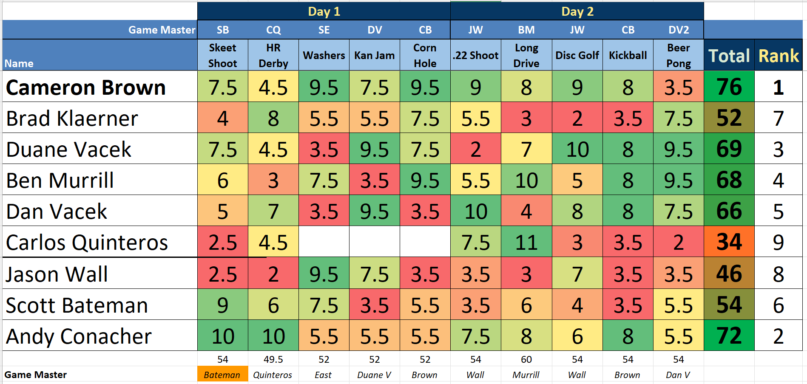
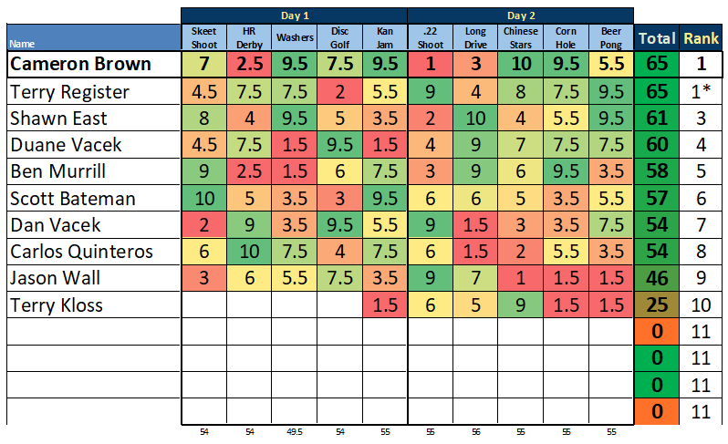

And the 2022 tournament, decided by the only tie in tournament history

The annual champion gets to remove one of the 10 decathlon events and replace it with an event of their choice
for the following year's competition. Past winners have enjoyed the prestige of proudly displaying the trophy
on their mantle, using it as collateral for large loans, or simply as a way to get into the
most exclusive night clubs.
Hopefully this year's champion will be tossing the trophy between boats during the victory parade.